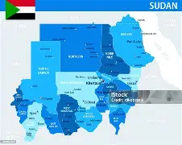
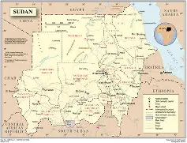
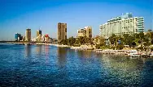
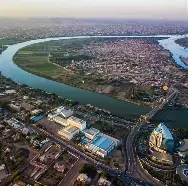
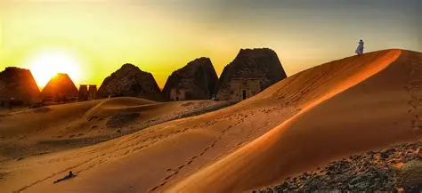

Судан — это страна контрастов, где бескрайние пески пустынь встречаются с водами Красного моря, а древние пирамиды соседствуют с оживленными рынками. Это направление не для туристов, ищущих все включено, а для настоящих искателей приключений, готовых к погружению в самобытную культуру и суровым условиям. Если вы готовы к такому путешествию, вот подробный гид, который поможет вам подготовиться.
Климат в Судане переходный: от тропического пустынного на севере до экваториального муссонного на юге. Здесь четко выделяются два основных сезона, а погода сильно различается в зависимости от региона.
Однозначно лучшее время для поездки в Судан — зимние месяцы, с ноября по февраль, а также март. В этот период стоит наиболее комфортная погода для осмотра достопримечательностей, путешествий по пустыне и отдыха на побережье Красного моря.
Прямых рейсов из России в Судан нет, поэтому путь будет долгим, с пересадками.
Для знакомства с историей и культурой страны советую включить в маршрут следующие места:
Список вещей должен быть продиктован климатом, культурными нормами и спецификой путешествия.
Судан, отличное место для покупки аутентичных вещей ручной работы.
Суданская кухня сытная и ароматная, в ней много общих черт с кухнями соседних стран. Фул (Ful medames): Блюдо из разваренных бобов фава, заправленное маслом, специями и зеленью. Это традиционный завтрак, который едят с лепешкой. Кисра (Kisra): Тонкая лепешка из сорго или пшеницы, которую подают к большинству блюд вместо хлеба. · Мулла (Mullah): Густое и сытное рагу из мяса (чаще всего баранины), овощей и сушеной бамии. Подается с кисрой или кашей асида. Тамия (Tamiya): Местный вариант фалафеля — жареные во фритюре шарики из перемолотых бобов (не нута!) со специями. Мясо на гриле: Суданцы умеют вкусно готовить мясо, особенно баранину. Стоит попробовать жареное на углях мясо ("фур" или просто шашлык). Напитки: Обязательно попробуйте каркаде — освежающий кисло-сладкий чай из лепестков гибискуса, а также местный кофе с пряностями (имбирем, кардамоном, корицей). Мятно-лимонный чай также очень популярен. Важно: В Судане действуют строгие законы шариата, поэтому алкоголь запрещен: его нельзя ввозить, продавать или употреблять в общественных местах.